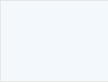

设计说明
交互规则说明
• 管理端框架交互规范

00. 登录
• 使用统一登陆
• 原登陆后进入员工门户页，现改为嵌套管理端框架的首页页面
0.侧边栏
• 侧边栏交互说明
1.首页
• 现有123门户直接植入
• 无顶级导航。一级导航为美团点评新logo与搜索；内容组件化、模块化改造
2.消息
• 开放平台，可供不同IM接入（大象/椒图），提供消息提醒、页面展示功能。（有消息提示）
3.通讯录
• 有通讯录功能直接植入。亦可作为开放平台，接入第三方通讯录
4.待办事项
• 对接统一待办中心（规划中），统一规划中心为开放平台可接入第三方待办。（有消息提示）
5.工作台
• 可在用户当前页面，对工作台进行点击，从侧边栏一级菜单向右滑出工作台浮窗
• 工作台浮窗结构：二级菜单与三级应用列表
• 操作1：鼠标可在二级菜单上悬浮便可切换三级应用列表的内容
• 操作2：三级应用列表有悬浮与点击操作，分别对应悬浮状态与点击状态
6.自定义侧边栏
• 没有固定应用图标与自定义应用图标时，自定义侧边栏图标显示在工作台图标后面
• 有固定应用图标出现在侧边栏时，自定义侧边栏图标显示在固定应用图标后面
• 有固定应用图标与自定义应用图标时，自定义侧边栏图标显示在最后一个自定义应用图标后面
• 可在用户当前页面，点击自定义侧边栏图标，从侧边栏一级菜单向右滑出自定义侧边栏浮窗
• 添加应用至侧边栏，自定义侧边栏区域为可编辑状态
7.搜索
• 可在用户当前页面，对搜索进行点击操作，从侧边栏一级菜单向右滑出搜索浮窗
• 点击搜索浮窗内搜索后，在当前页弹出搜索结果页浮窗（全屏覆盖）
8.设置
• 统一管理端框架配置界面

9.个人中心
• 视觉：用户头像（没有则显示默认）+用户名
• 鼠标悬浮：显示个人信息、修改密码、退出登录按键（鼠标移入悬浮窗固定，可点击操作）
• 鼠标点击：从侧边栏一级菜单向右滑出个人中心浮窗（头像、姓名、性别、个性签名、编辑按钮、工作信息、个人信息、修改信息按钮、修改密码按钮、退出登录按钮）